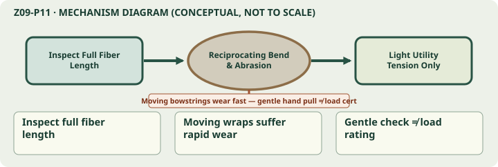

Z09-P11 · Tools and construction · Adapted historical material
Evaluate salvaged and natural cordage under abrasion and tension
Inspect found string or prepared plant fibers systematically before trusting them in moving or tensioned mechanisms.
When it applies · Evaluating salvaged utility twine or natural fiber cordage for bow-drill training, light lashings or temporary non-critical ties.
Equipment · Candidate natural or salvaged cordage tested at low safe hand tension (never overhead or life-safety).

Actions
- Inspect the entire length for thin pinched spots, brittle dry kinks, rot discoloration, cut strands and weak splices before tying—the narrowest damaged section governs failure.[K09, ED]
- Understand moving-cord wear from B007A/B008: reciprocating bowstrings suffer intense bending fatigue and surface friction at the spindle wrap, snapping far sooner than static tie-downs.[K09, C12, ED]
- Perform a gentle controlled low-level hand-pull check away from eyes and face, accepting that field hand-pulling verifies only basic integrity for light utility—NOT any engineered load rating.[K09, K08, ED]
Failure recognition · Wrapping uninspected dry brittle grass or nicked twine under high tension where sudden snap-back whips toward eyes or collapses a loaded assembly.[K09, K08]
Verify · Confirm uniform thickness, flexible unrotted fibers and strict confinement to light non-life-safety utility or supervised training.[K09, ED]
Stop or change course · Discard cordage showing powdering fibers, audible strand popping, glaze melts or uneven weak joints; never substitute improvised fiber for life-safety gear.[K09, K08]
Evidence and editorial notes
- C12 · NPS · Forces and Tools (current web edition)
- Section: Background and Procedure > Bow Drill · Conditions: Interpretive demonstration using known materials
Support: Reciprocating motion turns a spindle against a hearth. Friction heats wood dust until it can sustain an ember.
Limitations: Moisture, resinous wood, poor notch geometry, or physical fatigue can prevent ember formation. · Conflicting evidence: Does not guarantee ignition in emergency field conditions; conceptual/supervised training only.
Editorial note: Clearly distinguishes cold mechanism instruction from field-validated emergency ignition. · Specialist reviewer: Fire prevention and mechanism reviewer
Primary source · checked 2026-11-24 - K08 · OSHA · Hand and Power Tools (OSHA 3080) (agency PDF)
- Section: Personal Protective Equipment and Work Area Control · Conditions: Cutting, splitting, striking and rigging operations
Support: Maintain stable footing, eye and hand protection appropriate to flying chips or snapped cordage, and clear bystanders outside the swing or snap-back zone.
Limitations: Field kits often lack shop PPE, requiring slower conservative technique and lower-energy methods. · Conflicting evidence: None; drives snap-back and work-circle exclusion zones in Z09.
Editorial note: Enforces conservative work circles and snap-back clearance. · Specialist reviewer: Tool safety and occupational safety
Primary source · checked 2026-11-24 - K09 · USDA Forest Service · Handtools for Trail Work (0523-2810-MTDC) (agency handbook)
- Section: Cordage, Anchors and Rigging Boundaries · Conditions: Non-life-safety camp lashing, tarps, haul lines and tie-downs
Support: Cordage strength drops significantly at knots, sharp bends, wet fibers, UV exposure and abrasion; inspect fibers before loading and never use unrated camp cord or improvised bindings for life-safety suspension or climbing.
Limitations: No universal breaking strength applies to natural plant fibers or weathered salvaged rope. · Conflicting evidence: Counters folklore claims equating improvised cordage to rated climbing rope.
Editorial note: Separates camp utility lashing/hauling from life-safety rigging. · Specialist reviewer: Rigging safety and materials mechanics
Primary source · checked 2026-11-24
Source lineage · B007A P01 and B008 P05 natural bowstring; adapted historical material · Classification · Adapted historical material.